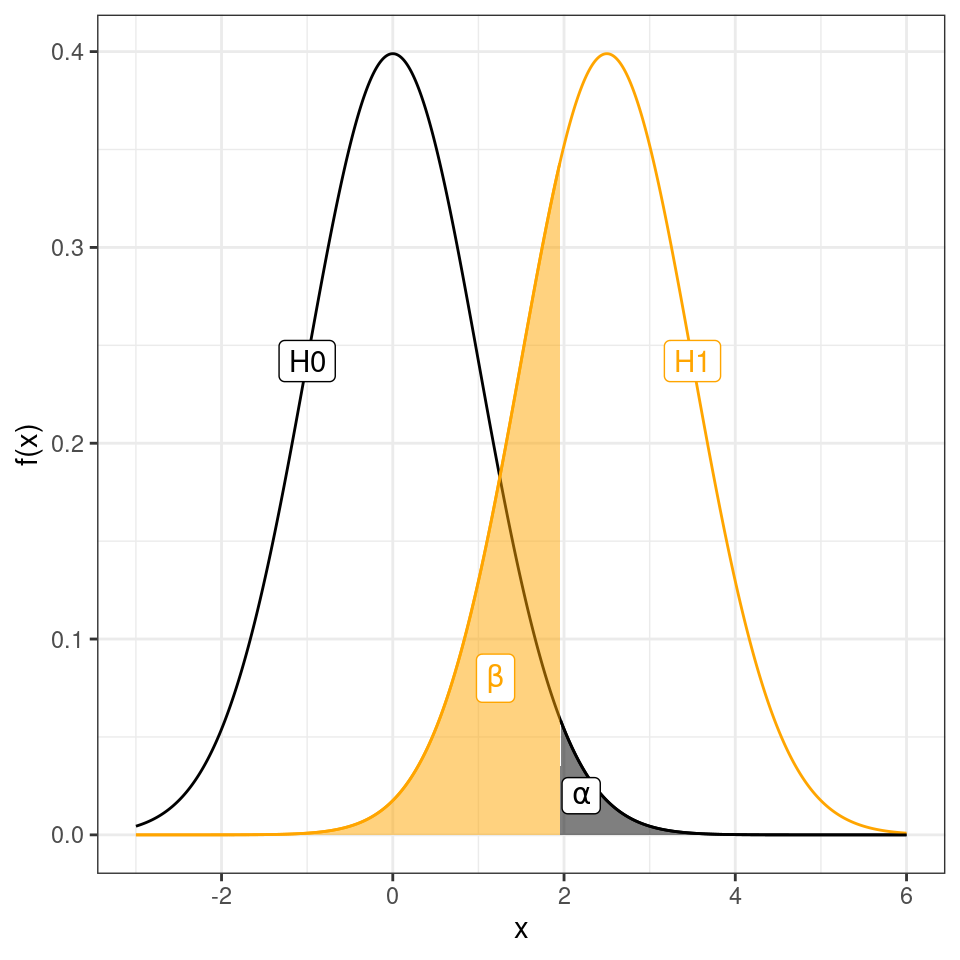
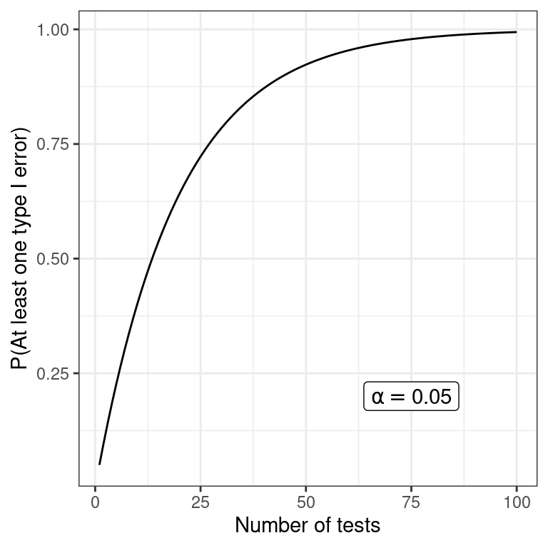

| Accept H0 | Reject H0 | |
| H0 is true | TN | Type I error, false alarm, FP |
| H0 is false | Type II error, miss, FN | TP |
4 Multiple testing
4.1 Error types
Remember from Section 1.4 that the probability of type I and II errors are denoted \(\alpha\) and \(\beta\), respectively;
\[\alpha = P(\textrm{type I error}) = P(\textrm{false alarm}) = P(\textrm{Reject }H_0|H_0 \textrm{ is true})\] \[\beta = P(\textrm{type II error}) = P(\textrm{miss}) = P(\textrm{Accept }H_0|H_1 \textrm{ is true})\] and the statistical power
\[\textrm{power} = 1 - \beta = P(\textrm{Reject }H_0 | H_1\textrm{ is true}).\]

4.2 Multiple testing
If a single test is perform we know that
- P(One type I error) = \(\alpha\)
- P(No type I error) = \(1 - \alpha\)
If \(m\) independent tests are performed (e.g. investigate many genes or proteins) the risk of false alarm (type I error) increases;
- P(No type I errors in \(m\) tests) = \((1 - \alpha)^m\)
- P(At least one type I error in \(m\) tests) = \(1 - (1 - \alpha)^m\)

Two common principles for dealing with multiple testing are control of family-wise error rate or false discovery rate.
- FWER: family-wise error rate, control the probability of one or more false positive \(P(N_{FP}>0)\), e.g. Bonferroni, Holm
- FDR: false discovery rate, control the expected value of the proportion of false positives among hits, \(E[N_{FP}/(N{FP}+N_{TP})]\), e.g. Benjamini-Hochberg, Storey
4.3 Bonferroni correction
To achieve a family-wise error rate of \(FWER \leq \gamma\) when performing \(m\) tests, declare significance and reject the null hypothesis for any test with \(p \leq \gamma/m\).
Objections: too conservative
4.4 Benjamini-Hochbergs FDR
| H0 is true | H0 is false | |
| Accept H0 | TN | FN |
| Reject H0 | FP | TP |
The false discovery rate is the proportion of false positives among ‘hits’, i.e. \(\frac{FP}{TP+FP}\).
Benjamini-Hochberg’s method control the FDR level, \(\gamma\), when performing \(m\) independent tests, as follows:
- Sort the p-values \(p_1 \leq p_2 \leq \dots \leq p_m\).
- Find the maximum \(j\) such that \(p_j \leq \gamma \frac{j}{m}\).
- Declare significance for all tests \(1, 2, \dots, j\).
4.5 ‘Adjusted’ p-values
Sometimes an adjusted significance threshold is not reported, but instead ‘adjusted’ p-values are reported.
- Using Bonferroni’s method the ‘adjusted’ p-values are:
\(\tilde p_i = \min(m p_i, 1)\).
A feature’s adjusted p-value represents the smallest FWER at which the null hypothesis will be rejected, i.e. the feature will be deemed significant.
- Benjamini-Hochberg’s ‘adjusted’ p-values are called \(q\)-values:
\(q_i = \min(\frac{m}{i} p_i, 1)\)
A feature’s \(q\)-value can be interpreted as the lowest FDR at which the corresponding null hypothesis will be rejected, i.e. the feature will be deemed significant.
Example 4.1 (10000 independent tests (e.g. genes)**)
| p-value | adj p (Bonferroni) | q-value (B-H) |
|---|---|---|
| 1.7e-08 | 0.0002 | 0.0002 |
| 5.8e-08 | 0.0006 | 0.0003 |
| 3.4e-07 | 0.0034 | 0.0011 |
| 9.1e-07 | 0.0091 | 0.0020 |
| 1e-06 | 0.0100 | 0.0020 |
| 2.4e-06 | 0.0240 | 0.0040 |
| 2.3e-05 | 0.2300 | 0.0329 |
| 3.6e-05 | 0.3600 | 0.0450 |
| 0.00022 | 1.0000 | 0.2300 |
| 0.00023 | 1.0000 | 0.2300 |
| 0.00073 | 1.0000 | 0.6636 |
| 0.0032 | 1.0000 | 1.0000 |
| 0.0045 | 1.0000 | 1.0000 |
| 0.0087 | 1.0000 | 1.0000 |
| 0.0089 | 1.0000 | 1.0000 |
| 0.012 | 1.0000 | 1.0000 |
| 0.014 | 1.0000 | 1.0000 |
| 0.045 | 1.0000 | 1.0000 |
| 0.08 | 1.0000 | 1.0000 |
| 0.23 | 1.0000 | 1.0000 |